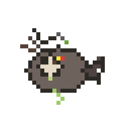
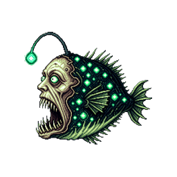

말미잘 · 바닷가재 — 심해 독성 성체 시안
심해에서 발견된 기이하고 독성이 강한 성체 후보 · 스테이징 (게임 미반영)
말미잘(해양 외톱동물)과 바닷가재(갑각류) 테마로 각 3종씩 제작했습니다.
기존 독성 해파리(
fluffy)·심해 문어(sparkle)와 별도 콘셉트입니다.
게임 표준 왼쪽 응시 측면 · 256×256 · scruffy bbox 정렬 · 능어 워크플로.

톤 레퍼런스 · defective심해아귀(scruffy) — 기괴·독성 defective 팔레트

톤 레퍼런스 · mutant녹면어(sickly) — 돌연변이·발광 defective
말미잘 Sea Anemone · Toxic
defective / pretty 후보 · 촉수·구강·독성 발광 · 측면 좌향

시안 1 · 보라독 말미잘
이름 후보: 보라독 말미 · 녹독해파리(아님)
보라 몸통·녹색 발광 반점, 긴 촉수 끝에서 독액 방울. 기이한 심연 기생형
← 왼쪽오른쪽 →
시안 2 · 백골 말미잘
이름 후보: 백골 말미 · 진홍구멍 말미
뼈처럼 하얀 구강·진홍 속, 검은 촉수 끝 녹독 glow. 가장 불쾌한 독성 느낌
← 왼쪽오른쪽 →
시안 3 · 산화 말미잘
이름 후보: 산화 말미 · 잔해 말미
녹슨 심해 잔해·산호와 융합된 돌연변이. 마젠타 독주머니·경고색 줄무늬
← 왼쪽오른쪽 →바닷가재 Deep-sea Lobster · Toxic
defective / normal 후보 · 비대칭 집게·갑각·독액 drip · 측면 좌향

시안 1 · 거대집게 가재
이름 후보: 독집게 가재 · 알비노 독게
창백한 껍질·한쪽 집게만 녹독 발광. 비대칭 돌연변이 심해 갑각류
← 왼쪽오른쪽 →
시안 2 · 유령 가재
이름 후보: 유령 가재 · 투명독게
반투명 갑각 속 보라 독샘, 마젠타 눈·노란 독액 drip. 심연 유령 갑각류
← 왼쪽오른쪽 →
시안 3 · 흑갑독 가재
이름 후보: 흑갑독 가재 · 용암 가재
검은 화산성 갑각·주황 경고 발광, 톱니 집게·녹독. 가장 위협적인 독성형
← 왼쪽오른쪽 →
스프라이트: assets/custom/malmil-1..3.png · assets/custom/badatgajae-1..3.png (256×256 RGBA)
raw: *-raw-*.png · prep: scripts/prepare_staging_adult.py
슬롯 제안: 말미잘 → farm 또는 defective grumpy · 바닷가재 → standard 또는 farm
다음 단계: 마음에 드는 시안 선택 → 액션 프레임 3종 → 승인 후 게임 반영